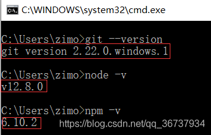

marblemm.github.io
个人博客
hexo部署说明
准备环境
1、安装git
2、设置ssh key
github设置添加SSH
3、安装nodejs ——-windows：nodejs选择LTS版本就行了。
验证环境
打开cmd窗口，输入命令
1 | git --version |
如果出现，类似如下图所示，说明环境正确

4、 安装hexo
前面git和nodejs安装好后，就可以安装hexo了，你可以先创建一个文件夹blog，然后cd到这个文件夹下（或者在这个文件夹下直接右键git bash打开）。输入命令
1 | npm install -g cnpm --registry=https://registry.npm.taobao.org #使用淘宝镜像，国内速度会比较快 |
然后用hexo -v查看一下版本，至此就全部安装完了。
本地发布
1 | hexo g #生成静态主页 |